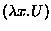
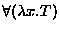
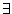

The components of the logic of Watson given so far support the logic of propositional connectives and equality, in conventional terms.
The new component of the logic introduced here is a restricted form of
 -abstraction, the introduction of functions by abstraction.
The new component is adequate to support the logic of quantification,
and also a powerful higher-order logic.
-abstraction, the introduction of functions by abstraction.
The new component is adequate to support the logic of quantification,
and also a powerful higher-order logic.
The particular higher-order logic used will be unfamiliar to most
readers, though (we hope) not difficult to explain. It is a variation
on the nonstandard set theory ``New Foundations'' (NF)
introduced by W. V. O. Quine in [25] (1937), as revised by
R. B. Jensen in [19] (1969). Set theories like NF avoid
paradox by allowing the scheme of set comprehension to be applied only
to ``stratified'' predicates. We will not discuss the set theories
here, but will describe the analogous system of  -calculus
with ``stratified''
-calculus
with ``stratified''  -abstraction, which is the higher-order
logic of Watson (references for this system are [13] (based on
Holmes's Ph.D. thesis), which describes a system of synthetic
combinatory logic rather than a
-abstraction, which is the higher-order
logic of Watson (references for this system are [13] (based on
Holmes's Ph.D. thesis), which describes a system of synthetic
combinatory logic rather than a  -calculus, [15],
which describes the
-calculus, [15],
which describes the  -calculus, and chapter 23 of Holmes's
book [17], which introduces further material about the
representation of data types, discussed below).
-calculus, and chapter 23 of Holmes's
book [17], which introduces further material about the
representation of data types, discussed below).
The notation we will use in this subsection for  -abstraction
is different from the notation used by Watson. Watson uses a scheme
of name-free variable binding due to de Bruijn (see [8];
not de Bruijn indices, but a related scheme which we have seen called
``de Bruijn levels''); this will be explained below. In this
subsection, the usual
-abstraction
is different from the notation used by Watson. Watson uses a scheme
of name-free variable binding due to de Bruijn (see [8];
not de Bruijn indices, but a related scheme which we have seen called
``de Bruijn levels''); this will be explained below. In this
subsection, the usual  -notation will be used. The usual
notation f(x) for function application will be used instead of the
notation (fx) more usual in
-notation will be used. The usual
notation f(x) for function application will be used instead of the
notation (fx) more usual in  -calculus.
-calculus.
We introduce the term constructions of a stratified
 -calculus. These are defined by mutual recursion with a
notion of ``relative type''. We begin with the description of the
type constructions and follow it with a description of the notion of
``relative type''.
-calculus. These are defined by mutual recursion with a
notion of ``relative type''. We begin with the description of the
type constructions and follow it with a description of the notion of
``relative type''.
As usual, an occurrence of a variable x in a term T is termed bound if it appears as part of some occurrence of a subterm  of T with the same binding variable; occurrences of variables which are not bound are said to be free.
We now define the notion of relative type. Each occurrence of a subterm of a term T has a type relative to T, which is an integer.
A well-formed  -term is said to be stratified, for
reasons which will be explained in the next subsection.
-term is said to be stratified, for
reasons which will be explained in the next subsection.
The axioms of this theory are the axioms of algebraic and case
expression logic from above, plus the following axioms for the new
notions of pair, application and  -abstraction:
-abstraction:
Unfortunately, things are not as simple as the brief paragraph before
the new axioms tries to make them appear. Algebraic logic is extended
to allow substitution of equals for equals inside  -terms,
without regard to the fact that the terms for which substitutions are
made may fail to have reference outside the
-terms,
without regard to the fact that the terms for which substitutions are
made may fail to have reference outside the  -terms, because
of the presence of bound variables. This extension of the notion of
substitution is equivalent to a weak form of extensionality for
functions. Notice that we do not adopt the full axiom of
extensionality, which we exhibit:
-terms, because
of the presence of bound variables. This extension of the notion of
substitution is equivalent to a weak form of extensionality for
functions. Notice that we do not adopt the full axiom of
extensionality, which we exhibit:
If we were to adopt this assumption we would have a system equivalent to Quine's ``New Foundations'', which is not known to be consistent. As it is we have a system equivalent to an extension of the modification NFU + Infinity of NF due to Jensen in [19], which is known to be equivalent to Russell's theory of types (with infinity), which is generally believed to be consistent.
Further, the notion of substitution which appears both here and in the earlier axioms is considerably complicated by the need to avoid collisions of bound variables. We will not give a formal account of substitution here, but we will give a formal description below of the notion of substitution for Watson's own notation (using de Bruijn levels).
We briefly indicate how quantification is supported. We can define the universal quantifier thus:
The notation of Watson does not permit the introduction of new binders: the actual notation is more like . The existential quantifier  may be defined using deMorgan's laws as usual. Reasoning with the existential quantifier may be facilitated by introducing a new primitive function choose and the dreaded
The HOL system uses this as the definition of the existential quantifier (and defines the universal quantifier in terms of the existential quantifier); this axiom can be used to facilitate existential reasoning in Watson, though the built-in logic without choice also supports adequate existential reasoning. It is interesting to note that the logic of Watson with full extensionality is inconsistent with the axiom of choice (because NF is inconsistent with choice).